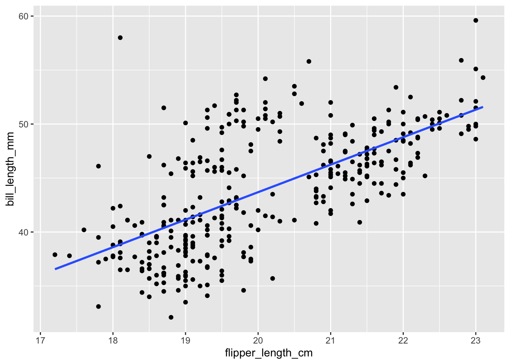
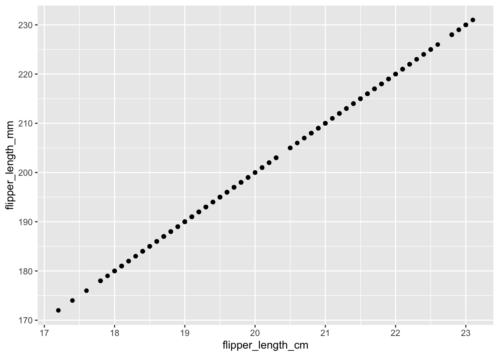

You can download a template file to work with here.
File organization: Save this file in the “Activities” subfolder of your “STAT155” folder.
Learning goals
By the end of this lesson, you should be able to:
Explain when variables are redundant or multicollinear.
Relate redundancy and multicollinearity to coefficient estimates and \(R^2\).
Explain why adjusted \(R^2\) is preferable to multiple \(R^2\) when comparing models with different numbers of predictors.
Readings and videos
Today is a day to discover ideas, so no readings or videos to go through before class, but if you want to see today’s ideas presented in a different way, you can take a look at the following after class:
Context: Last time we talked about different types of research questions (descriptive, predictive, and causal) and worked through how to translate these questions to data explorations and modeling. Also recall that when we talked about model evaluation previously, we asked if the model was correct, strong, and fair.
Today we’ll revisit predictive research questions today and some considerations when trying to build strong models. In particular, we’ll consider nuances and limitations to indiscriminately adding more predictors to our model. To explore these ideas, we’ll explore data on physical characteristics of different penguin species:
# Load packageslibrary(ggplot2)library(dplyr)
Attaching package: 'dplyr'
The following objects are masked from 'package:stats':
filter, lag
The following objects are masked from 'package:base':
intersect, setdiff, setequal, union
# Load datalibrary(palmerpenguins)data(penguins)
You can find a codebook for these data by typing ?penguinsin your console (not Rmd). Our goal throughout will be to build a model of bill lengths (in mm):
(Art by @allison_horst)
To get started, the flipper_length_mm variable currently measures flipper length in mm. Let’s create and save a new variable named flipper_length_cm which measures flipper length in cm. NOTE: There are 10mm in a cm.
Exercise 1: Modeling bill length by flipper length
What can a penguin’s flipper (arm) length tell us about their bill length? To answer this question, we’ll consider 3 of our models:
model
predictors
penguin_model_1
flipper_length_mm
penguin_model_2
flipper_length_cm
penguin_model_3
flipper_length_mm + flipper_length_cm
Plots of the first two models are below:
ggplot(penguins, aes(y = bill_length_mm, x = flipper_length_mm)) +geom_point() +geom_smooth(method ="lm", se =FALSE)ggplot(penguins, aes(y = bill_length_mm, x = flipper_length_cm)) +geom_point() +geom_smooth(method ="lm", se =FALSE)
Before examining the model summaries, check your intuition. Do you think the penguin_model_2 R-squared will be less than, equal to, or more than that of penguin_model_1? Similarly, how do you think the penguin_model_3 R-squared will compare to that of penguin_model_1?
Check your intuition: Examine the R-squared values for the three penguin models and summarize how these compare.
Explain why your observation in part b makes sense. Support your reasoning with a plot of just the 2 predictors: flipper_length_mm vs flipper_length_cm.
OPTIONAL challenge: In summary(penguin_model_3), the flipper_length_cm coefficient is NA. Explain why this makes sense. HINT: Thinking about what you learned about controlling for covariates, why wouldn’t it make sense to interpret this coefficient? BONUS: For those of you that have taken MATH 236, this has to do with matrices that are not of full rank!
Exercise 2: Incorporating body_mass_g
In this exercise you’ll consider 3 models of bill_length_mm:
model
predictors
penguin_model_1
flipper_length_mm
penguin_model_4
body_mass_g
penguin_model_5
flipper_length_mm + body_mass_g
Which is the better predictor of bill_length_mm: flipper_length_mm or body_mass_g? Provide some numerical evidence.
penguin_model_5 incorporates both flipper_length_mm and body_mass_g as predictors. Before examining a model summary, ask your gut: Will the penguin_model_5 R-squared be close to 0.35, close to 0.43, or greater than 0.6?
Check your intuition. Report the penguin_model_5 R-squared and summarize how this compares to that of penguin_model_1 and penguin_model_4.
Explain why your observation in part c makes sense. Support your reasoning with a plot of the 2 predictors: flipper_length_mm vs body_mass_g.
Exercise 3: Redundancy and Multicollinearity
The exercises above have illustrated special phenomena in multivariate modeling:
two predictors are redundant if they contain the same exact information
two predictors are multicollinear if they are strongly associated (they contain very similar information) but are not completely redundant.
Recall that we examined 5 models:
model
predictors
penguin_model_1
flipper_length_mm
penguin_model_2
flipper_length_cm
penguin_model_3
flipper_length_mm + flipper_length_cm
penguin_model_4
body_mass_g
penguin_model_5
flipper_length_mm + body_mass_g
Which model had redundant predictors and which predictors were these?
Which model had multicollinear predictors and which predictors were these?
In general, what happens to the R-squared value if we add a redundant predictor to a model: will it decrease, stay the same, increase by a small amount, or increase by a significant amount?
Similarly, what happens to the R-squared value if we add a multicollinear predictor to a model: will it decrease, stay the same, increase by a small amount, or increase by a significant amount?
Exercise 4: Considerations for strong models
Let’s dive deeper into important considerations when building a strong model. We’ll use a subset of the penguins data for exploring these ideas.
# For illustration purposes only, take a sample of 10 penguins.# We'll discuss this code later in the course!set.seed(155)penguins_small <-sample_n(penguins, size =10) %>%mutate(flipper_length_mm =jitter(flipper_length_mm))
Consider 3 models of bill length:
# A model with one predictor (flipper_length_mm)poly_mod_1 <-lm(bill_length_mm ~ flipper_length_mm, penguins_small)# A model with two predictors (flipper_length_mm and flipper_length_mm^2)poly_mod_2 <-lm(bill_length_mm ~poly(flipper_length_mm, 2), penguins_small)# A model with nine predictors (flipper_length_mm, flipper_length_mm^2, ... on up to flipper_length_mm^9)poly_mod_9 <-lm(bill_length_mm ~poly(flipper_length_mm, 9), penguins_small)
Before doing any analysis, which of the three models do you think will be best?
Calculate the R-squared values of these 3 models. Which model do you think is best?
Check out plots depicting the relationship estimated by these 3 models. Which model do you think is best?
# A plot of model 1ggplot(penguins_small, aes(y = bill_length_mm, x = flipper_length_mm)) +geom_point() +geom_smooth(method ="lm", se =FALSE)
# A plot of model 2ggplot(penguins_small, aes(y = bill_length_mm, x = flipper_length_mm)) +geom_point() +geom_smooth(method ="lm", formula = y ~poly(x, 2), se =FALSE)
# A plot of model 9ggplot(penguins_small, aes(y = bill_length_mm, x = flipper_length_mm)) +geom_point() +geom_smooth(method ="lm", formula = y ~poly(x, 9), se =FALSE)
Exercise 5: Reflecting on these investigations
List 3 of your favorite foods. Now imagine making a dish that combines all of these foods. Do you think it would taste good?
Too many good things doesn’t make necessarily make a better thing. Model 9 demonstrates that it’s always possible to get a perfect R-squared of 1, but there are drawbacks to putting more and more predictors into our model. Answer the following about model 9:
How easy would it be to interpret this model?
Would you say that this model captures the general trend of the relationship between bill_length_mm and flipper_length_mm?
How well do you think this model would generalize to penguins that were not included in the penguins_small sample? For example, would you expect these new penguins to fall on the wiggly model 9 curve?
Exercise 6: Overfitting
Model 9 provides an example of a model that is overfit to our sample data. That is, it picks up the tiny details of our data at the cost of losing the more general trends of the relationship of interest. Check out the following xkcd comic. Which plot pokes fun at overfitting?
Some other goodies:
Exercise 7: Questioning R-squared
Zooming out, explain some limitations of relying on R-squared to measure the strength / usefulness of a model.
Exercise 8: Adjusted R-squared
We’ve seen that, unless a predictor is redundant with another, R-squared will increase. Even if that predictor is strongly multicollinear with another. Even if that predictor isn’t a good predictor! Thus if we only look at R-squared we might get overly greedy. We can check our greedy impulses a few ways. We take a more in depth approach in STAT 253, but one quick alternative is reported right in our model summary() tables. Adjusted R-squared includes a penalty for incorporating more and more predictors. Mathematically (where \(n\) is the sample size and \(p\) is the number of non-intercept coefficients):
Thus unlike R-squared, Adjusted R-squared can decrease when the information that a predictor contributes to a model isn’t enough to offset the complexity it adds to that model. Consider two models:
example_1 <-lm(bill_length_mm ~ species, penguins)example_2 <-lm(bill_length_mm ~ species + island, penguins)
Check out the summaries for the 2 example models. In general, how does a model’s Adjusted R-squared compare to the R-squared? Is it greater, less than, or equal to the R-squared?
How did the R-squared change from example model 1 to model 2? How did the Adjusted R-squared change?
Explain what it is about island that resulted in a decreased Adjusted R-squared. Note: it’s not necessarily the case that island is a bad predictor on its own!
Reflection
Today we looked at some cautions surrounding indiscriminately adding variables to a model. Summarize key takeaways.
Response: Put your response here.
Render your work
Click the “Render” button in the menu bar for this pane (blue arrow pointing right). This will create an HTML file containing all of the directions, code, and responses from this activity. A preview of the HTML will appear in the browser.
Scroll through and inspect the document to check that your work translated to the HTML format correctly.
Close the browser tab.
Go to the “Background Jobs” pane in RStudio and click the Stop button to end the rendering process.
Navigate to your “Activities” subfolder within your “STAT155” folder and locate the HTML file. You can open it again in your browser to double check.
Solutions
Exercise 1: Modeling bill length by flipper length
model
predictors
penguin_model_1
flipper_length_mm
penguin_model_2
flipper_length_cm
penguin_model_3
flipper_length_mm + flipper_length_cm
Plots of the first two models are below:
ggplot(penguins, aes(y = bill_length_mm, x = flipper_length_mm)) +geom_point() +geom_smooth(method ="lm", se =FALSE)
`geom_smooth()` using formula = 'y ~ x'
Warning: Removed 2 rows containing non-finite outside the scale range
(`stat_smooth()`).
Warning: Removed 2 rows containing missing values or values outside the scale range
(`geom_point()`).
ggplot(penguins, aes(y = bill_length_mm, x = flipper_length_cm)) +geom_point() +geom_smooth(method ="lm", se =FALSE)
`geom_smooth()` using formula = 'y ~ x'
Warning: Removed 2 rows containing non-finite outside the scale range (`stat_smooth()`).
Removed 2 rows containing missing values or values outside the scale range
(`geom_point()`).

Your intuition–answers will vary
The R-squared values are all the same!
summary(penguin_model_1)$r.squared
[1] 0.430574
summary(penguin_model_2)$r.squared
[1] 0.430574
summary(penguin_model_3)$r.squared
[1] 0.430574
The two variables are perfectly linearly correlated—they contain exactly the same information!
ggplot(penguins, aes(x = flipper_length_cm, y = flipper_length_mm)) +geom_point()
Warning: Removed 2 rows containing missing values or values outside the scale range
(`geom_point()`).

An NA means that the coefficient couldn’t be estimated. In penguin_model_3, the interpretation of the flipper_length_cm coefficient is the average change in bill length per centimeter change in flipper length, while holding flipper length in millimeters constant…this is impossible! We can’t hold flipper length in millimeters fixed while varying flipper length in centimeters—if one changes the other must. (In linear algebra terms, the matrix underlying our data is not of full rank.)
Exercise 2: Incorporating body_mass_g
In this exercise you’ll consider 3 models of bill_length_mm:
model
predictors
penguin_model_1
flipper_length_mm
penguin_model_4
body_mass_g
penguin_model_5
flipper_length_mm + body_mass_g
flipper_length_mm is a better predictor than body_mass_g because penguin_model_1 has an R-squared value of 0.4306 vs 0.3542 for penguin_model_4.
Intuition check–answers will vary
R-squared is for penguin_model_5 which is slightly higher than that of penguin_model_1 and penguin_model_4.
d.flipper_length_mm and body_mass_g are positively correlated and thus contain related information, but not completely redundant information. There’s some information in flipper length in explaining bill length that isn’t captured by body mass, and vice-versa.
ggplot(penguins, aes(x = flipper_length_mm, y = body_mass_g)) +geom_point()
Warning: Removed 2 rows containing missing values or values outside the scale range
(`geom_point()`).
Exercise 3: Redundancy and Multicollinearity
model
predictors
penguin_model_1
flipper_length_mm
penguin_model_2
flipper_length_cm
penguin_model_3
flipper_length_mm + flipper_length_cm
penguin_model_4
body_mass_g
penguin_model_5
flipper_length_mm + body_mass_g
penguin_model_3 had redundant predictors: `flipper_length_mm and flipper_length_cm
penguin_model_5 had multicollinear predictors: flipper_length_mm and body_mass_g were related but not redundant
R-squared will stay the same if we add a redundant predictor to a model.
R-squared will increase by a small amount if we add a multicollinear predictor to a model.
Exercise 4: Considerations for strong models
A gut check! Answers will vary
Based on R-squared: recall that R-squared is interpreted as the proportion of variation in the outcome that our model explains. It would seem that higher is better, so poly_mod_9 might seem to be the best. BUT we’ll see where this reasoning is flawed soon!
Based on the plots: Answers will vary
Exercise 5: Reflecting on these investigations
salmon, chocolate, samosas. Together? Yuck!
Regarding model 9:
NOT easy to interpret.
NO. It’s much more wiggly than the general trend.
NOT WELL. It is too tailored to our data.
Exercise 6: Overfitting
The bottom left plot pokes fun at overfitting.
Exercise 7: Questioning R-squared
It measures how well our model explains / predicts our sample data, not how well it explains / predicts the broader population. It also has the feature that any non-redundant predictor added to a model will increase the R-squared.
Exercise 8: Adjusted R-squared
example_1 <-lm(bill_length_mm ~ species, penguins)example_2 <-lm(bill_length_mm ~ species + island, penguins)summary(example_1)
Call:
lm(formula = bill_length_mm ~ species, data = penguins)
Residuals:
Min 1Q Median 3Q Max
-7.9338 -2.2049 0.0086 2.0662 12.0951
Coefficients:
Estimate Std. Error t value Pr(>|t|)
(Intercept) 38.7914 0.2409 161.05 <2e-16 ***
speciesChinstrap 10.0424 0.4323 23.23 <2e-16 ***
speciesGentoo 8.7135 0.3595 24.24 <2e-16 ***
---
Signif. codes: 0 '***' 0.001 '**' 0.01 '*' 0.05 '.' 0.1 ' ' 1
Residual standard error: 2.96 on 339 degrees of freedom
(2 observations deleted due to missingness)
Multiple R-squared: 0.7078, Adjusted R-squared: 0.7061
F-statistic: 410.6 on 2 and 339 DF, p-value: < 2.2e-16
summary(example_2)
Call:
lm(formula = bill_length_mm ~ species + island, data = penguins)
Residuals:
Min 1Q Median 3Q Max
-7.9338 -2.2049 -0.0049 2.0951 12.0951
Coefficients:
Estimate Std. Error t value Pr(>|t|)
(Intercept) 38.97500 0.44697 87.198 <2e-16 ***
speciesChinstrap 10.33204 0.53502 19.312 <2e-16 ***
speciesGentoo 8.52988 0.52082 16.378 <2e-16 ***
islandDream -0.47321 0.59729 -0.792 0.429
islandTorgersen -0.02402 0.61004 -0.039 0.969
---
Signif. codes: 0 '***' 0.001 '**' 0.01 '*' 0.05 '.' 0.1 ' ' 1
Residual standard error: 2.965 on 337 degrees of freedom
(2 observations deleted due to missingness)
Multiple R-squared: 0.7085, Adjusted R-squared: 0.7051
F-statistic: 204.8 on 4 and 337 DF, p-value: < 2.2e-16
Adjusted R-squared is less than the R-squared
From model 1 to 2, R-squared increased and Adjusted R-squared decreased.
island didn’t provide useful information about bill length beyond what was already provided by species.